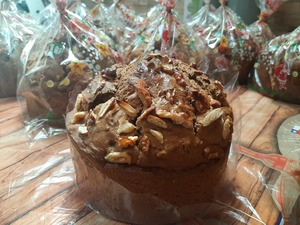
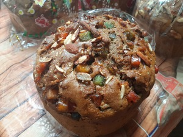
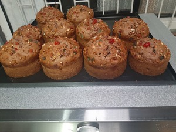
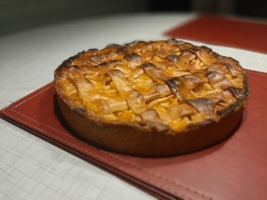
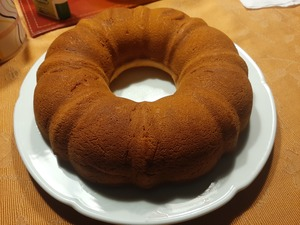

Quiénes Somos
Galeria
Contacto
Política de entrega
Las Delicias De La Tuti
Venta al Mayor y al Detalle de Pan de Pascua, Cola de mono y algo más, Productos 100% Artesanales.
Todos
Pan de Pascua
Cola de Mono
kuchen
Queque
  
 
¿Donde nos encontramos ubicados ?